Drück drauf.
Dein Fernseher reagiert.
Teek Taike macht dein iPhone, iPad und deine Apple Watch zur Fernbedienung. Tasten, die sich anfühlen wie echte Tasten, und deine Apps mit einem Tipp auf dem großen Bildschirm. Die Fernbedienung ist kostenlos.
Jetzt im App Store für iPhone, iPad und Apple Watch.
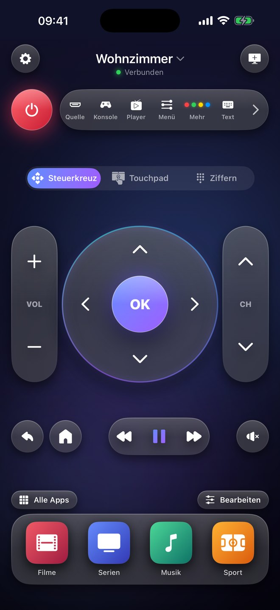
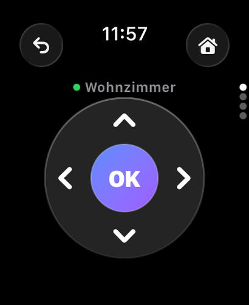
Wie eine echte Fernbedienung.
Nur schöner, und immer dabei. Alles, was du am Abend brauchst, auf einem Bildschirm, ohne Scrollen. Die ganze Fernbedienung ist kostenlos.
Tasten zum Anfassen
Lautstärke und Programm sind lange Wipptasten, die beim Drücken kippen. Das Steuerkreuz gibt nach, jede Taste klickt spürbar.
Apps mit einem Tipp
Deine Streaming-Apps und alle anderen Apps deines Fernsehers direkt starten. Deine Lieblinge liegen unten in der Leiste.
Läuft gerade
Oben in der App siehst du, welche App gerade auf deinem Fernseher läuft. Sparsam abgefragt, nur solange die App offen ist.
Steuerkreuz, Touchpad, Ziffern
Ein Umschalter direkt über dem Steuerkreuz: Pfeile drücken, mit dem Finger wischen oder Programmnummern tippen. Alles an derselben Stelle, nichts springt.
iPhone-Tasten als Lautstärke
Solange die App offen ist, regeln die Lautstärketasten am iPhone den Fernseher.
Siri und Kurzbefehle
„Lauter mit Teek Taike“, „Fernseher aus mit Teek Taike“. Auch im Kontrollzentrum und als Schlaf-Timer über eine Automation.
Verbindung, die hält
Beim Öffnen verbindet sich die App mit dem Fernseher, der an ist. Fällt das WLAN kurz aus, verbindet sie sich von selbst neu.
Verbindung auf einen Blick
Ein Punkt neben dem Namen deines Fernsehers zeigt, ob alles steht. Ist etwas nicht in Ordnung, sagt die App beim Antippen, woran es liegt.
Mehrere Handys im Haushalt
Jedes iPhone in der Familie bekommt seine eigene Freigabe am Fernseher. Einmal „Zulassen“ pro Handy, dann werfen sich die Geräte nicht mehr gegenseitig raus. Ein neues Handy lässt du auch mit einem schon verbundenen zu.
Zocken mit einem Tipp
Fernseher an, richtiger HDMI-Eingang, passende Lautstärke: ein Tipp auf „Zocken“ erledigt alles. Mit „Zurück zum Fernsehen“ geht es wieder aufs Programm.
Spielzeit für Kinder
45 Minuten einstellen, 5 Minuten vorher kommt eine Mitteilung, danach schaltet der Fernseher zurück aufs Programm oder aus.
Deutsch, Englisch, Französisch
Die App spricht die Sprache deines iPhones.
So sieht es aus.
Zum Durchblättern wischen →
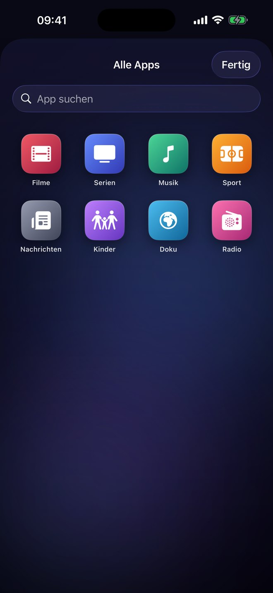
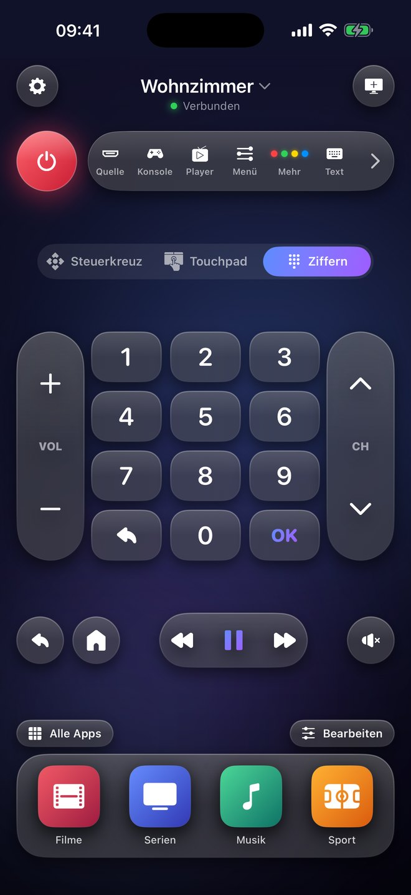
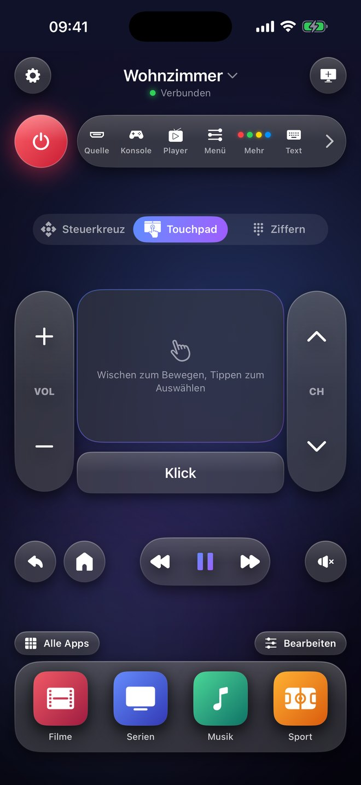
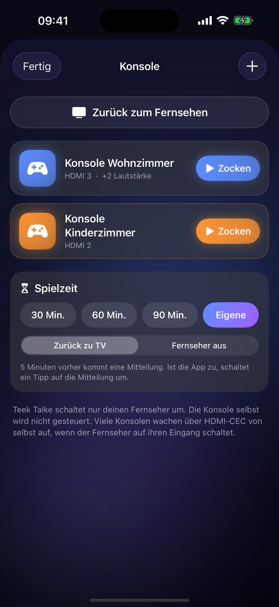
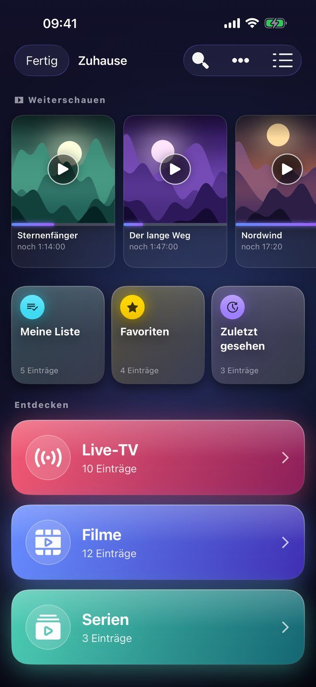
Auf dem iPad alles auf einen Blick.
Links die Fernbedienung mit großem Steuerkreuz und langen Tasten für Lautstärke und Programm. Rechts deine Lieblings-Apps, Ziffern, Farbtasten, Touchpad und ein Feld zum Text senden. Quer passt alles auf eine Seite, ohne Scrollen.
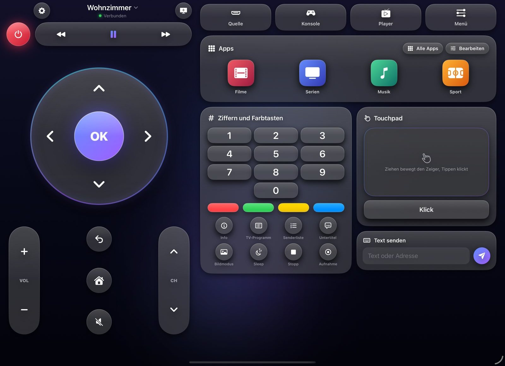
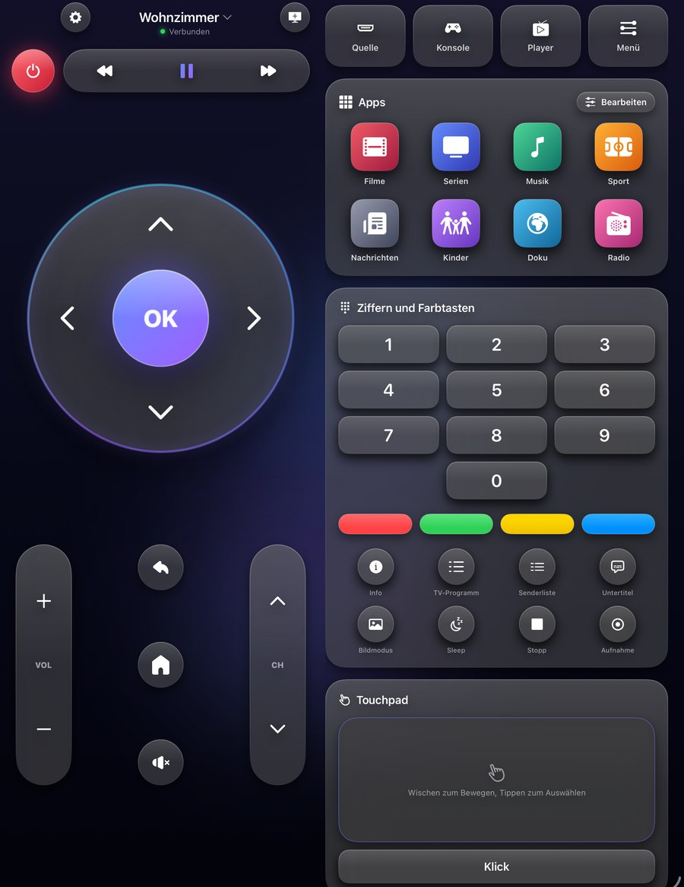
Ein Player für deine eigenen Listen.
Trag deine eigene Liste ein, als M3U-Link oder als Zugang mit Server, Benutzername und Passwort. Live, Filme und Serien landen sortiert in drei Bereichen. Der Player gehört zu Teek Taike Pro.
Zum Durchblättern wischen →
Live, Filme, Serien
Kategorien, Favoriten und Zuletzt gesehen, dazu ein Suchfeld für alles. Ordner benennst, färbst und sortierst du selbst.
Senderliste wie am Fernseher
Die Live-Sender untereinander, wie du es vom Fernseher kennst, mit dem, was gerade läuft. Umschalten mit einem Wisch.
TV-Programm mit Ordnermenü
Das Programm aller Sender als Raster. Oben wählst du den Ordner, hat dein Anbieter ein Archiv, schaust du Verpasstes nach.
Ordner mit einem Tipp
Deine wichtigsten Ordner heftest du oben an. So bist du mit einem Tipp bei deinen Sendern.
Deine Sender-Reihenfolge
Zieh die Sender in die Reihenfolge, die zu dir passt. Die Nummern folgen deiner Liste, auch beim Umschalten im Player.
Listen zusammenführen
Mehrere eigene Listen wachsen auf Wunsch zu einer Ansicht zusammen. Jede bleibt einzeln erhalten, und du löst die Verbindung jederzeit wieder.
Liste bequem hinzufügen
Lange Adressen musst du nicht am Handy tippen: QR-Code scannen, einen Link antippen oder die Liste vom Computer in deinem WLAN schicken.
Senden an den Fernseher
Dein Samsung spielt den Stream selbst ab, das iPhone wird zur Fernbedienung mit Touchpad. Alles bleibt in deinem WLAN zu Hause.
Mehrfachansicht
Zwei oder vier Sender gleichzeitig, der Ton kommt vom angetippten. Per Bildschirmsynchronisierung auch auf dem Fernseher.
Meine Liste und Weiterschauen
Filme und Serien für später merken. Eine Reihe zeigt, wo du aufgehört hast, und am Ende einer Folge zählt die nächste schon herunter.
Bewertungen auf einen Blick
Die Bewertung steht direkt auf dem Poster. Sortier nach Bewertung oder zeig nur Titel ab 7 ★.
Film- und Serienseiten mit Trailer
Großes Bild oder Trailer, Beschreibung, Bewertung und Besetzung, soweit dein Anbieter sie liefert. Dann Abspielen oder weiter, wo du warst.
Wie eine Streaming-App
Doppeltipp spult, Wischen wechselt den Sender, am Rand regelst du Helligkeit und Lautstärke. Mit AirPlay und Bild in Bild.
CarPlay
Deine Sender und Filme im Auto hören, mit Senderliste und Weiter/Zurück auf dem Auto-Bildschirm. Im Auto gibt es nur Ton, kein Bild.
Einschlaf-Timer
Nach 15, 30, 45 oder 60 Minuten oder am Ende der Folge wird es leiser und der Player hält an. Die Stelle bleibt gemerkt.
Bildschirmsperre und Kindersicherung
Sperr den Bildschirm im Player, dann stoppt kein Tipp aus Versehen den Film. Kategorien für Erwachsene sind gesperrt, eigene Ordner sicherst du mit PIN.
Leer und sauber
Teek Taike enthält keine Sender, Filme, Serien oder Listen und vermittelt keine Anbieter. Du spielst nur ab, was du selbst rechtmäßig erhalten hast.
Fernbedienung gratis. Pro einmal kaufen.
Alles, was eine Fernbedienung können muss, kostet nichts. Wer seine eigenen Listen schauen will, schaltet mit Teek Taike Pro den Player frei. Einmal kaufen und behalten, kein Abo.
Fernbedienung
- Alle Tasten, Steuerkreuz und Ziffern
- Apps starten und „Läuft gerade“
- Touchpad und Tastatur
- Siri, Kurzbefehle, Kontrollzentrum
- iPad und Apple Watch
- Zocken und Spielzeit
- Mehrere Handys im Haushalt
Teek Taike Pro
- Alles aus der kostenlosen Fernbedienung
- Player für eigene Listen (M3U oder Zugang mit Benutzername)
- Senden an den Fernseher
- Mehrfachansicht mit 2 oder 4 Sendern
- Meine Liste, Weiterschauen, nächste Folge
- Bewertungen, Trailer, TV-Programm
- Bildschirmsperre und Kindersicherung
Bezahlt wird über den App Store mit deinem Apple-Account. Den Preis zeigt dir die App vor dem Kauf. Auf deinen anderen Geräten tippst du einfach auf „Käufe wiederherstellen“.
Am Handgelenk.
Mit der Apple Watch bleibt das iPhone in der Tasche. Große Tasten, die du sicher triffst, und die Krone regelt die Lautstärke. Ein Wisch führt zu Programm, Wiedergabe und deinen Apps.
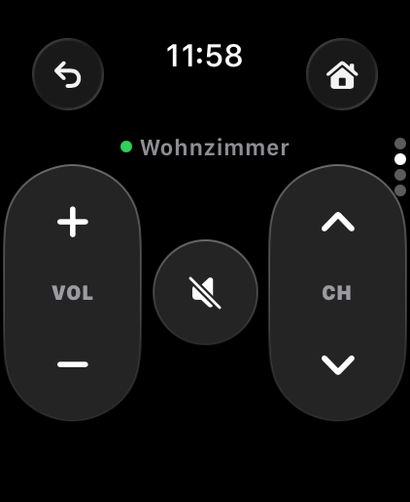
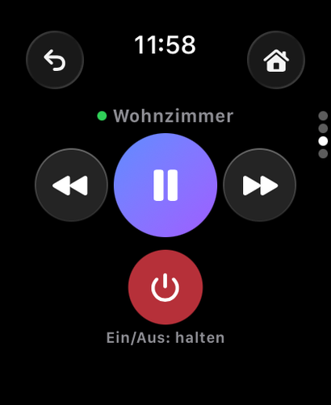
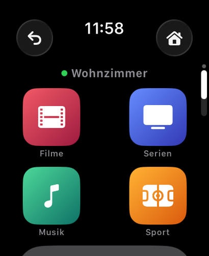
Welche Fernseher?
Fernseher und iPhone müssen im selben WLAN sein. Beim ersten Verbinden fragt der Fernseher einmal „Zulassen?“, danach geht alles von selbst.
Samsung Smart TV
Mit Tizen, ungefähr ab Baujahr 2016. Getestet mit einem Samsung QLED von 2025. Zum Einschalten über das WLAN am Fernseher „Mit Mobilgerät einschalten“ aktivieren (Einstellungen › Allgemein › Netzwerk › Experteneinstellungen).
Weitere Marken
Weitere Fernseher kommen per Update, sobald sie an echten Geräten getestet sind.
Spielkonsolen über HDMI
Teek Taike schaltet deinen Samsung auf den HDMI-Eingang deiner Konsole. Die Konsole selbst wird nicht gesteuert.
Apps gehören ihren Anbietern
Die Apps laufen auf deinem Fernseher. Teek Taike startet sie nur und ist nicht mit den Herstellern oder App-Anbietern verbunden.
Gut zu wissen.
Was kostet Pro?
Die Fernbedienung ist kostenlos. Teek Taike Pro ist ein einmaliger Kauf im App Store, kein Abo und keine versteckten Kosten. Den genauen Preis in deiner Währung zeigt dir die App, bevor du kaufst.
Sind Sender enthalten?
Nein. Teek Taike enthält keine Sender, Filme, Serien oder Listen und vermittelt auch keine Anbieter. Der Player spielt nur deine eigenen Listen ab, die du rechtmäßig bekommen hast, als M3U-Link oder als Zugang mit Benutzername.
Mehrere Handys im Haushalt?
Klar. Jedes iPhone meldet sich mit eigenem Namen beim Fernseher, der fragt pro Handy einmal „Zulassen?“. Danach steuern alle denselben Fernseher, ohne sich gegenseitig rauszuwerfen. Pro gilt auf allen Geräten mit deinem Apple-Account.
Welche Fernseher funktionieren?
Samsung Smart TVs mit Tizen, ungefähr ab Baujahr 2016. Fernseher und iPhone müssen im selben WLAN sein. Weitere Marken kommen per Update, sobald sie an echten Geräten getestet sind.
Wie funktioniert Senden an den Fernseher?
Du tippst im Player auf Senden, und dein Samsung spielt den Stream selbst ab. Das iPhone wird zur Fernbedienung. Erlaubt dein Anbieter nur eine Verbindung, holt das iPhone den Stream und reicht ihn in deinem WLAN an den Fernseher weiter. Dafür bleibt die App offen.
Wo liegen meine Zugangsdaten?
Nur auf deinem iPhone. Das Passwort deiner Liste liegt im Schlüsselbund von iOS. Es gibt kein Konto bei uns, keine Werbung und kein Tracking.
Deine Daten bleiben bei dir.
Kein Konto, keine Werbung, keine Analyse, kein Tracking. Die App spricht direkt mit deinem Fernseher im WLAN.
Was gespeichert wird
Nur auf deinem iPhone: Name und Adresse deiner Fernseher und die Freigabe, die der Fernseher beim „Zulassen“ vergibt. Fernseher entfernen oder App löschen, und alles ist weg.
Deine Zugangsdaten
Link, Server und Benutzername deiner Listen bleiben auf deinem iPhone, das Passwort liegt im Schlüsselbund. Abgespielt wird direkt zwischen deinem iPhone und deinem Anbieter, nicht über uns.
Senden bleibt zu Hause
Beim Senden an den Fernseher läuft alles in deinem WLAN. Muss das iPhone den Stream weiterreichen, darf nur dein Fernseher ihn abrufen, über eine zufällige Adresse, die nach dem Schauen verschwindet.
Kauf über Apple
Pro kaufst du im App Store. Die Zahlung wickelt Apple ab, wir sehen weder deinen Namen noch deine Zahlungsdaten.
Verbindungen ins Internet
Für App-Symbole fragt die App die öffentliche App-Store-Suche von Apple. Trailer werden erst geladen, wenn du eine Film- oder Serienseite öffnest.
Keine Inhalte dabei
Teek Taike bringt keine Sender oder Listen mit. Du entscheidest selbst, welche eigene Liste du einträgst.